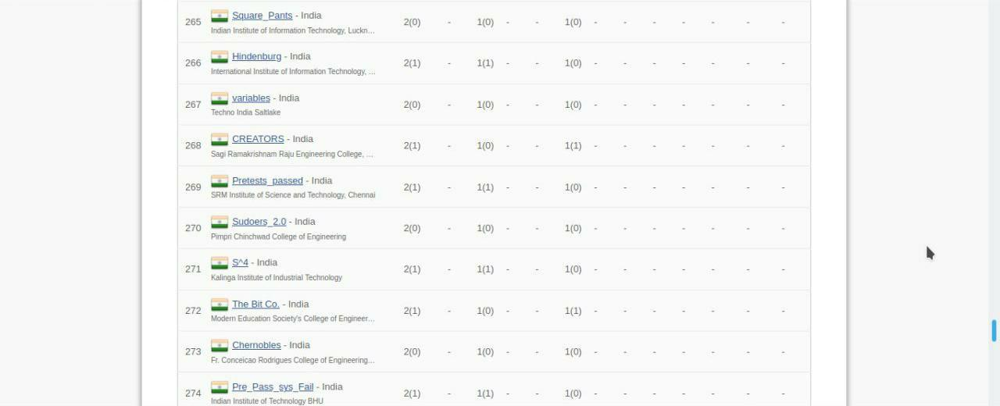

29th May, 2020
15 min read
Well firstly, those who don't know about ICPC, it is the IOI for colleges, much like Putnam for maths (except that in Putnam, only specific colleges are allowed). There are several stages, namely an Online Round, followed by an On-site Regional Round (the top team of each college from the Online Round comes here, generally speaking), followed by a Sub-Continental Semis, and finally the World Finals!
Making it to the World Finals is huge, and you materialistically get awarded with direct offers from Google, etc.
So, is this blog about how three dudes worked their asses off super hard to finally go to the World Finals?
Sadly, No.
Not all blogs are so motivational.
This is a more realistic blog, where three lads managed to go to the On-Site Regionals after topping their college with little practice, fucked up there, and then came back ;___;
Welcome to my blog. Ladies and Gentlemen. Brace yourselves for some meme content. Here we go:
(Disclaimer: We were so inspired by Rajdeep Karmakar's VLOG that we had decided to make a Lulz Vlog ourselves from beforehand (>.<) )
[03/10/2019,21:01] Me:
[03/10/2019,21:06] Dip: Wtf bro
So ray0410, kartikay101 and I had teamed up for the Online Round in October. We were certainly not the best team in our college. But after the Online Round, we were luckily going to the Regionals in December.
We boarded an overnight bus from Chennai to Ernakulam. We had a li'l bit of vodka with us (I can write about it now, as we're over age). Kartikay was too pure for all these, so he slept.
Bus rides are not too pleasant, usually. But vodka is.
We reached Kerela early in the next morning, but Amritapuri was still 2.5hrs away. We had to go by changing multiple vehicles, and finally we reached, after standing throughout in a bus, to a place which was pretty much in the middle of nowhere.
But, tbh, it was serene.

Yes, Kerala is a beaut.
We were given one room, with 4 beds in the boy's hostel. One of them was for our team's faculty-in-charge, who was, as a matter of fact, our DS faculty from our college, but he didn't bother to come when he realised this would be less of an excursion and more of a serious contest.
Anyway, so Amritapuri is necessarily a Vishwa Vidyapeetham, founded by Sri Mata Amritanandamayi Devi (you could see her pictures everywhere), with lots of foreign-exchange students, built on some holistic ideals ig, and under strict discipline and vIgiLaNcE (looking at my teammates :P).
The food system was pretty weird, duh! Their mess food was beyond crap (honestly, we have stayed and eaten in South Indian hostel for about a year, but we always have had some North Indian choices. Forcing everybody to eat South Indian dishes of the lowest quality of mess-food, and making only one type of biased food arrangement, especially when you know people will be coming from all over the country, is criticizable). There were also no commendable restaurant-joints nearby, and you had to walk down the road for atleast 10-15 mins to find one or two cafes (which we discovered much later). There was a roll joint beside tho, who had stopped making rolls and had expired tomato sauces, and made tons of birthday cakes for god-knows-who in that deserted area, where we ate chowmein once by mistake. So, we did away mostly with biscuits and cakes.
Now, they take the participants to an excursion every year, but ofc it had to be our year when it got cancelled due to some issues in the management team ;__;
SED, yes T__T
But good at heart, they decided to make it up to the guests by arranging a gRaNd BaNquET diNnEr (veg) that very night with 2000's Bollywood theme.
We were enjoying pretty much, actually, till the D-day came. On the night before the contest, we practiced some Virtual Contests on Codeforces. It doesn't help much in the last moment really, even if you come accross some new topic, but we had nothing better to do.
On the final day, we got ready early, got us some breakfast and reached the hall. We had had dress rehearsals and practice contest the day before to check our machines, text editors, environment and get acquainted with all the resources that would be available to us during the contest.
Each team had to make their own Codebook also, for referring to any snippets of algorithm if you need to while the contest was on.
ICPC is like, they'd allow you to carry all resources and snippets of code with you, whatever you like, and then make problems such that even after that, you cannot solve those problems :)
The contest was of 5 hrs. We started off with a silly mistake leading us to a penalty right in our first submission in the first few minutes. But we buckled up pretty fast, and solved 2 problems within the first 25 mins. They were cakewalk, pretty much, one being a maths, and the 2nd one being a string problem.
Struggle began after that though, for the next 4.5 hrs, as we tried solving what seemed to be a dp, and a maths problem respectively (P3 and P4 to be precise. The other problems? They were beyond our comprehension abilities.).
But sadly, whenever we seemed to be close enough, some other self-constructed test cases made us realise we were far away from the actual solution.
Ultimately, we couldn't solve anything more, and solving 2/12 problems in 5 hrs doesn't make you much happy, and you can very well call that a disaster :(
Here's our team profile.

Anyway, we waited after the contest for the Problem-Discussion session to see what observations did we miss, and that, my friend, was an absolute disaster!
Honestly, we couldn't even understand the editorials of P3 and P4 right there properly, as they trivialized some complicated dp states and just quickly went over the first few problems with underperforming mics, and, on top of that,
WE
MISSED
OUR
RETURN
BUS!
DEI, never trust Google Map's traffic predictions!
So ultimately, we had to book a new bus and flights on-spot there as we had already left the hostel and had come to Kalamaserry and were too devastated to go back, and ultimately had to return after an unexpectedly long, tiring and costly journey!
Anyhow, as Saket, a senior of our's in college, had later told us, beta, Regionals mein jaane ka naseeb sabka nei hota
>.>
So, I guess......that's it? :P